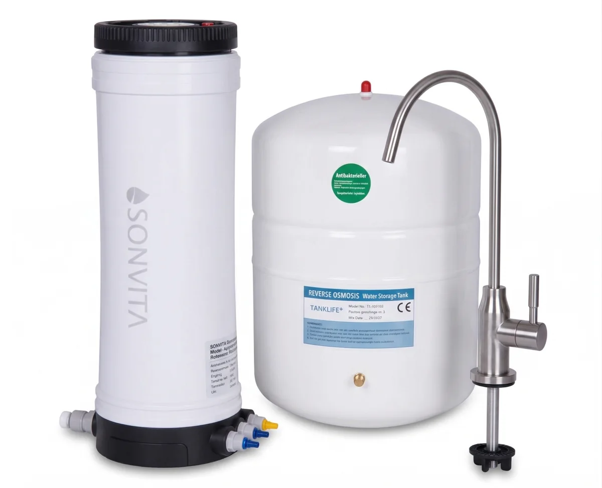

Direct Flow RO
SONVITA Aqua Tower
Erleben Sie mit dem Sonvita Aqua Tower reinstes Trinkwasser dank moderner Umkehrosmose-Technologie – effizient, kompakt und zuverlässig.
229,00 €
Technische Daten
| Höhe | 390mm |
| Durchmesser | 140mm |
| Leistung | 2 Filterstufen |
| Highlights | Untertisch Osmoseanlage mit Leitungsanschluss; Inkl. Kaltwasserhahn und Vorratstank (3L); 100 GPD (ca. 260 ml/Minute); Wir empfehlen einen Wasserstopp |
Beschreibung
Erleben Sie mit dem Sonvita Aqua Tower reinstes Trinkwasser dank moderner Umkehrosmose-Technologie – effizient, kompakt und zuverlässig.
Datenhinweis
Preis, Bild und technische Angaben stammen von der verlinkten offiziellen Produktseite. Varianten und Verfügbarkeit können sich ändern.